🤝 Upskill & mentorship
Resume workshops, mentor networking, and hiring-focused sessions. A big part of the day — students meet sponsors, sponsors meet the next hire, and practitioners find the folks who will answer their questions after April 24th.
About MOCS
MOCS is a one-day summit bringing together defenders, students, agencies, and hiring teams working in operational technology. Industry-founded, community-built — with upskilling and mentorship at the core.
Who we are
MOCS is industry-founded and sits at the intersection of academia, government, and industry for OT cybersecurity. Organized by Security for the Folks (XFTF) and hosted by Marquette University's Center for Cybersecurity — we built this summit to put practitioners, students, agencies, and hiring teams in the same room.
Midwest OT Cybersecurity Summit. OT means operational technology — the control systems, PLCs, and industrial networks that run manufacturing plants, utilities, and critical infrastructure. IT security plays by different rules in these environments, and the people defending them don't always get a dedicated conference close to home.
MOCS is more than a "how to break in" event. Upskilling and mentorship are a big part of the day — career paths, resume workshops, and mentor networking sit alongside the technical content. A Midwest-local, one-day, practitioner-focused event covering ICS/OT defense, career growth, and hands-on sessions you can bring back to work on Monday.
XFTF is a cybersecurity maker space — a place to build, tinker, teach, and learn together. That's the theme: community, experimentation, and skills that transfer. No vendor spin, no paywalls.
Marquette University's Center for Cybersecurity hosts the summit on campus and sponsors student registration. Together we're putting 200+ attendees in the same room on April 24th.

Our team
Five people — practitioners, academics, students, and program operators — kept building this summit together. Security for the Folks is the mentorship circle that seeded it; Marquette University's Center for Cybersecurity makes it happen on the ground.
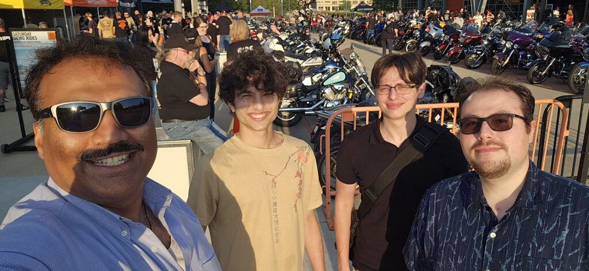

Founder · MOCS
Founder, MOCS · Founder & CEO, Malkan Solutions · Adjunct Professor, Marquette
Spent 20+ years at GE Healthcare and Rockwell Automation before founding Malkan Solutions. Returned to Marquette in 2024 to teach ethical hacking — and launched MOCS to put Midwest OT practitioners in the same room.
chiragmalkan →
Academia · Research
Associate Professor, Computer Science · Marquette
Cybersecurity and privacy researcher. Holds a $2.6M NSF grant to train the next generation of IT security pros. Awarded GenCyber grants by NSA & NSF.
debbie-perouli-mu →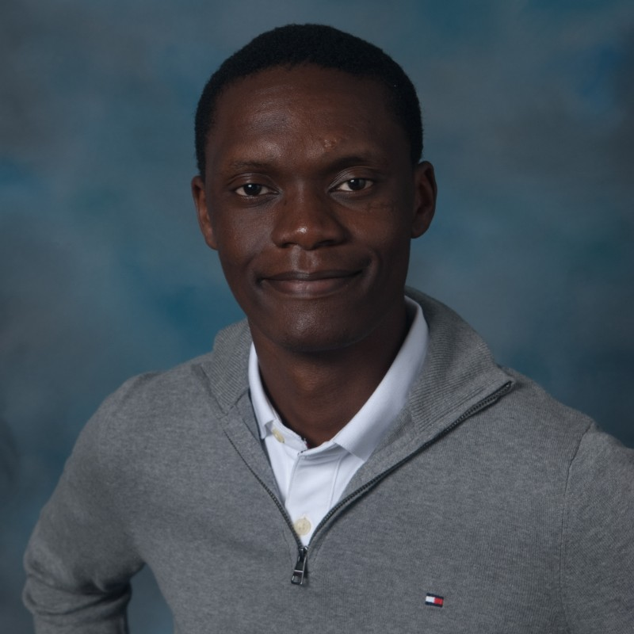
Industry Relations
Director of Industry Partnerships · MOCS
Bridges MOCS with industry sponsors, presenting companies, and the OT practitioner community. Owns speaker relationships, sponsor activations, and the partnerships pipeline. MS Computer Science, Marquette Cybersecurity.
kevin-umba →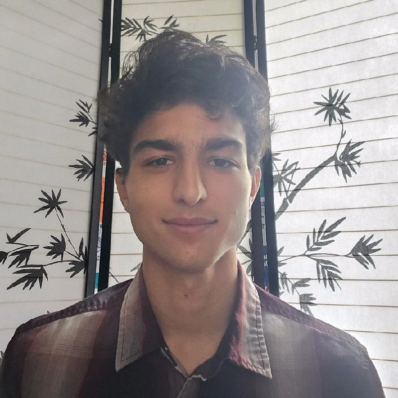
Founder · XFTF
Founder, Security for the Folks (XFTF)
Founded Security for the Folks — the grassroots cybersecurity maker space that seeded MOCS. Built the mentorship circle that brings practitioners, students, and professors into the same room across Wisconsin.
vikrammalkan →Business Development
Head of Business Development · MOCS
Drives MOCS business development — sponsorship growth, new partner cultivation, and the revenue programs that keep student tickets free. Marquette University, Center for Cybersecurity.
nwamaka-jessica-ottor →Why attend
A practical, community-driven OT cybersecurity conference for defenders, students, and hiring teams.
Resume workshops, mentor networking, and hiring-focused sessions. A big part of the day — students meet sponsors, sponsors meet the next hire, and practitioners find the folks who will answer their questions after April 24th.
Real-world OT and ICS topics across manufacturing, industrial control, and critical-infrastructure environments. No marketing decks.
Earn Continuing Professional Education credits through attendance. Certificate provided on request after the summit.
Watch
A quick look at what MOCS is about — the people, the room, and what you'll walk away with.
By the numbers
Sessions
Rooms
Hours
Students
Behind the scenes
From late-night planning sessions to venue walkthroughs and fresh merch — a look at the work and heart that went into building this summit. Hover to pause the strip; click any photo to enlarge.
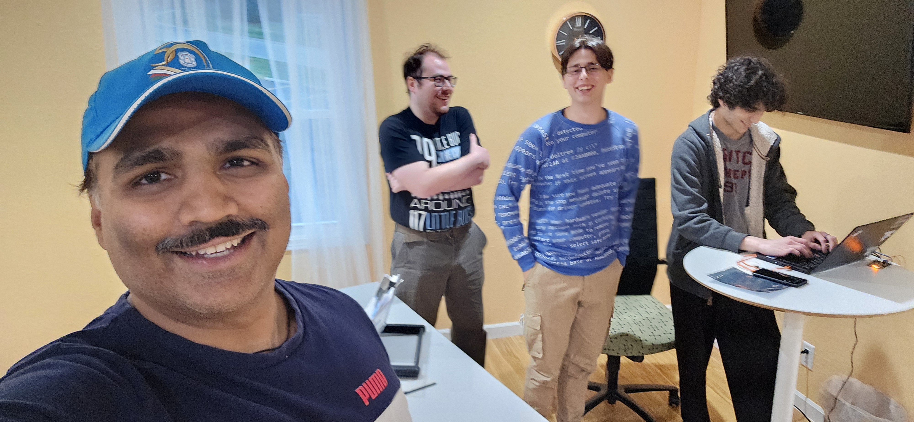
Nov 2024
Where it all started
First planning sessions
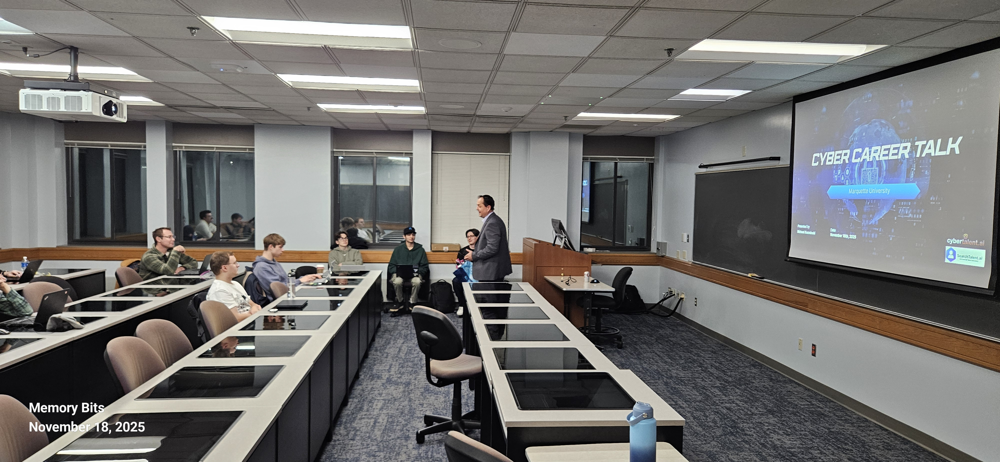
Nov 2025
Cyber Career Talk at Marquette
Building community momentum
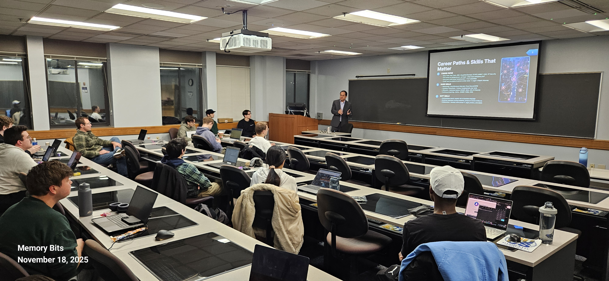
Nov 2025
Career paths & skills
Packed room at Marquette
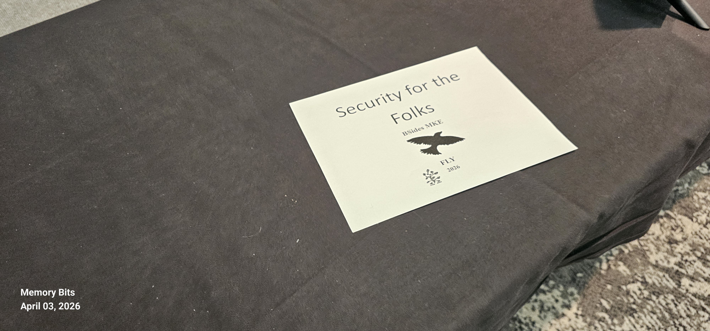
Apr 3, 2026
Representing at BSides MKE
Community table
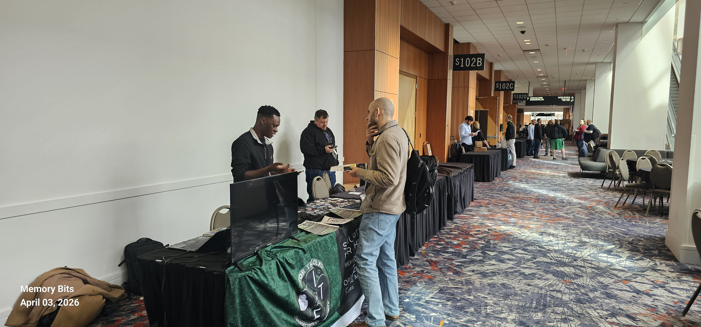
Apr 3, 2026
Inspired at BSides MKE
Taking notes from the best
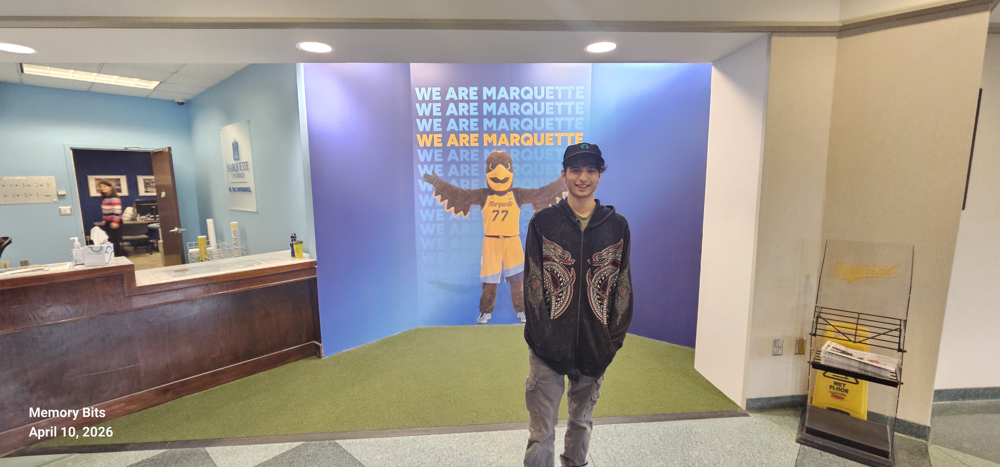
Apr 10, 2026
Venue scout — AMU
We Are Marquette
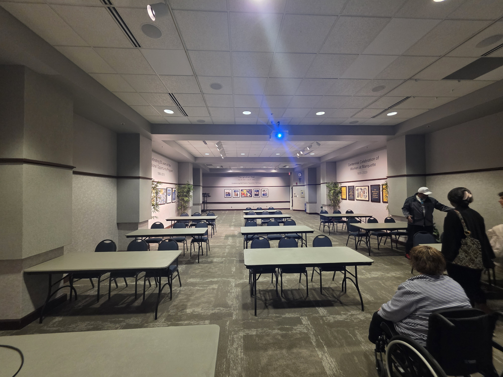
Apr 10, 2026
Main hall walkthrough
AMU Room 227
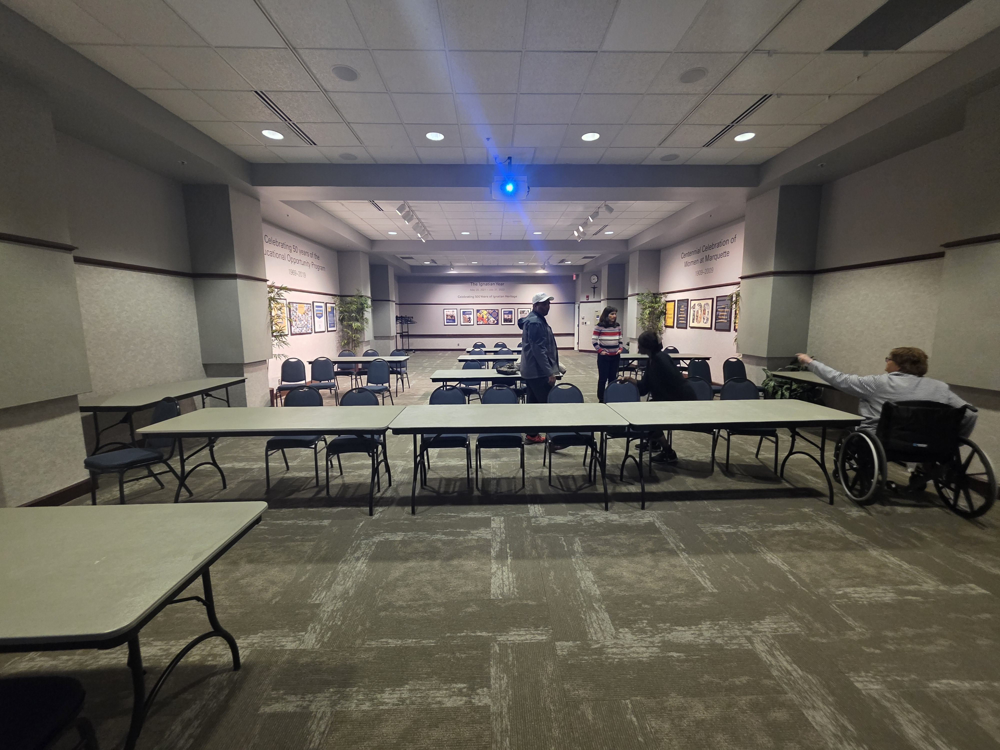
Apr 10, 2026
Planning the layout
Seating, tables, sightlines
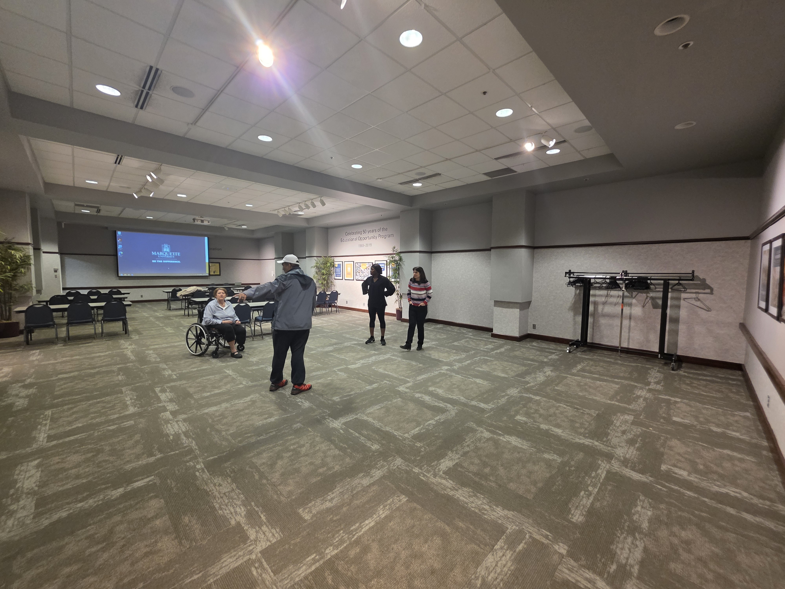
Apr 10, 2026
AV & projector test
Every seat, good view
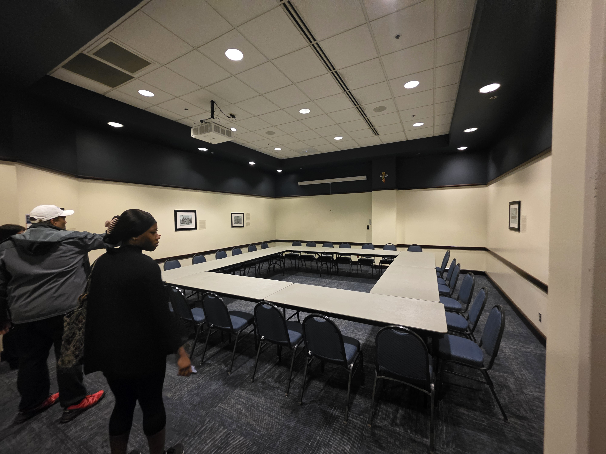
Apr 10, 2026
Breakout rooms
AMU 252 & 254
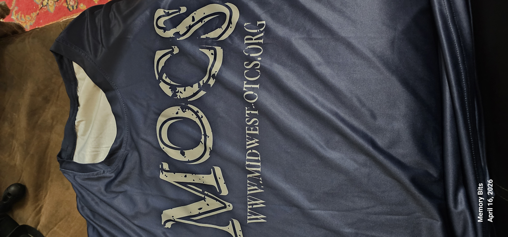
Apr 16, 2026
The merch has landed 👕
midwest-otcs.org
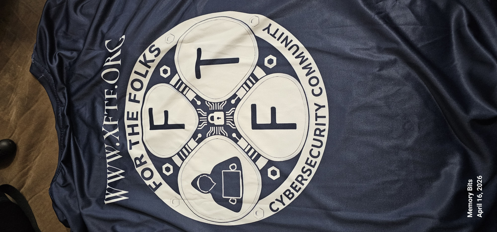
Apr 16, 2026
SFTF community badge
www.xftf.org
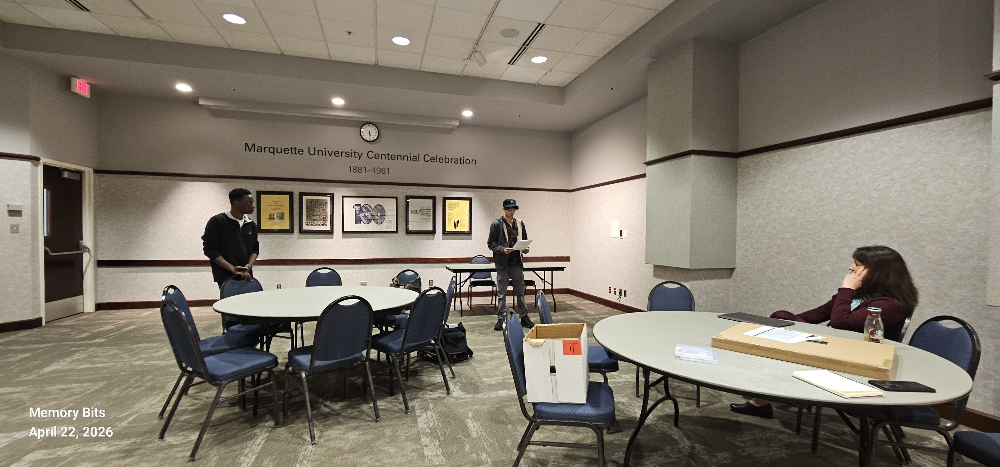
Apr 22, 2026
MC run-through
Working the open
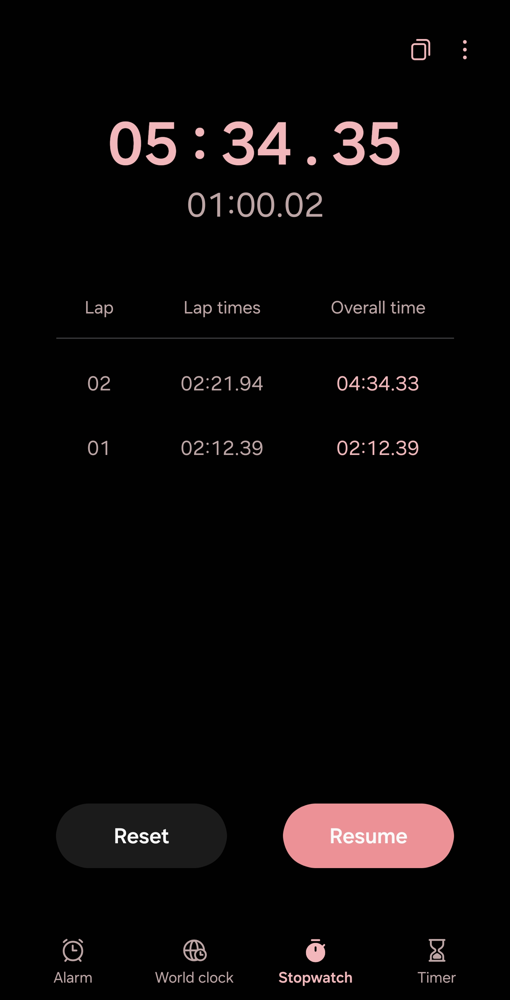
Apr 22, 2026
Every minute counts
Stopwatch on the script
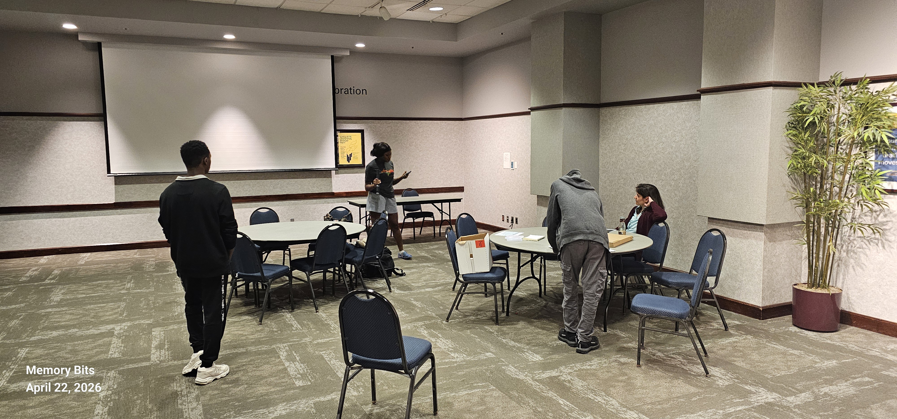
Apr 22, 2026
Dialed in
Full dress rehearsal
Nov 2024
Where it all started
First planning sessions
Nov 2025
Cyber Career Talk at Marquette
Building community momentum
Nov 2025
Career paths & skills
Packed room at Marquette
Apr 3, 2026
Representing at BSides MKE
Community table
Apr 3, 2026
Inspired at BSides MKE
Taking notes from the best
Apr 10, 2026
Venue scout — AMU
We Are Marquette
Apr 10, 2026
Main hall walkthrough
AMU Room 227
Apr 10, 2026
Planning the layout
Seating, tables, sightlines
Apr 10, 2026
AV & projector test
Every seat, good view
Apr 10, 2026
Breakout rooms
AMU 252 & 254
Apr 16, 2026
The merch has landed 👕
midwest-otcs.org
Apr 16, 2026
SFTF community badge
www.xftf.org
Apr 22, 2026
MC run-through
Working the open
Apr 22, 2026
Every minute counts
Stopwatch on the script
Apr 22, 2026
Dialed in
Full dress rehearsal
Milestones
Chronological look at every milestone from first planning meeting to conference week.
The founding team gathers for the first planning sessions — whiteboarding the vision for a community-driven OT cybersecurity summit in Milwaukee.
Building community momentum with a Cyber Career Talk at Marquette — connecting students with cybersecurity professionals months before MOCS.
Packed classroom at Marquette — students engaged with speakers covering real-world cyber career paths and the skills employers look for.
Security for the Folks sets up a community table at BSides MKE — spreading the word about MOCS 2026 and connecting with the local security community.
Walking the BSides MKE vendor floor for inspiration — seeing what great community conferences look like up close and taking notes for MOCS.
First full walkthrough of the Alumni Memorial Union. Standing in the lobby in front of Marquette's golden eagle — it's getting real.
Walking through the main session room for the first time. Projector up, tables in rows — envisioning hundreds of attendees filling these seats.
The team walks the floor, planning where sponsor tables go, sightlines to the screen, and how best to accommodate all attendees.
Testing the projector and screen in the main hall — making sure every seat in the room gets a great view of the presentations.
Checking out AMU Rooms 252 and 254 — intimate, well-equipped spaces perfect for hands-on and technical breakout sessions.
MOCS 2026 t-shirts arrive just days before the summit — repping midwest-otcs.org. These will be worn with pride by the team on April 24th.
The XFTF shirt arrives alongside MOCS gear. For the Folks, by the Folks. See you April 24th.
Two days out. Script in hand, standing in the living room and rehearsing the welcome — setting the tone for how April 24th needs to feel the moment the doors open.
Stopwatch on every section of the MC script. 12 sessions, 3 rooms, tight transitions — so every speaker gets their full time and the day lands on schedule.
Full pass through the intro, sponsor shout-outs, and session handoffs. By the end of the night the script isn't paper anymore — it's muscle memory for Friday.
Every sponsor logo, every student ticket, every speaker who said yes — that's how this summit gets built. If you haven't grabbed a seat yet, April 24th is coming fast.